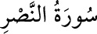

110- en-NASR SÛRESİ
Nasr, yardım demektir. Sûrede Allah Teâlâ’nın Nebiyy-i Ekrem (s.a.) Efendimiz’e
yardım ederek fetihlere kavuşturduğu ifâde edildiği için bu ismi almıştır. Bu sûre,
Mekke’nin fethi sırasında inmiş olmakla beraber Medîne devrinde yâni hicretten
sonra indiği için Medenî (Medîne’de inen) sûrelerdendir. Üç âyettir. İslâm zaferini
haber verir. İbn Ömer’den gelen rivâyete göre bu sûre indikten sonra Rasûlullah
Efendimiz (s.a.) seksen gün yaşamıştır.